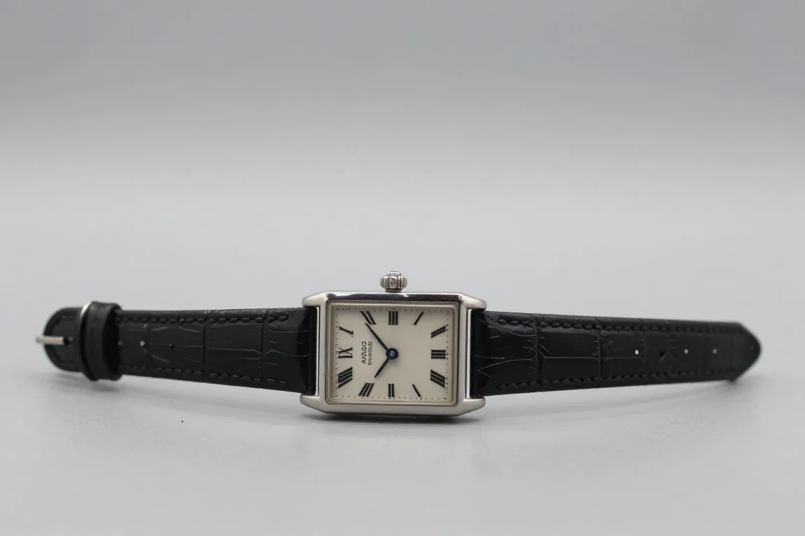

The rectangular watch that Louis Cartier drew in 1917 after the plan of a tank seen from above. It has two side bars, a railway minute track, blued sword hands and a cabochon on the crown. The case is platinum or gold.

Core thesis
A watch is a piece of jewellery with a plan. It has straight lines, black and white, and a rich metal, with no curve that has no job.
Design principles
Draw the case as a rectangle about 23 mm wide and 30 mm long, with two parallel side bars that run into the lugs.
Print Roman numerals inside a railway minute track that forms a rectangle.
Cut the hands as blued steel swords.
Set a cabochon of sapphire or ruby on the crown.
Use black, white and one precious metal; add colour with enamel or gems only.
Keep the face flat and the lines straight; round only the crown and the strap.
Mount diamonds in a platinum frame with milled edges, in straight rows of baguettes.
Fit a strap of black or brown crocodile with a gold or platinum buckle.